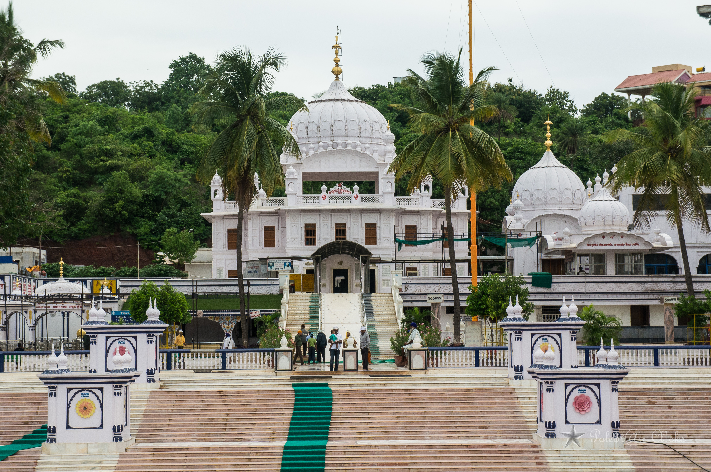
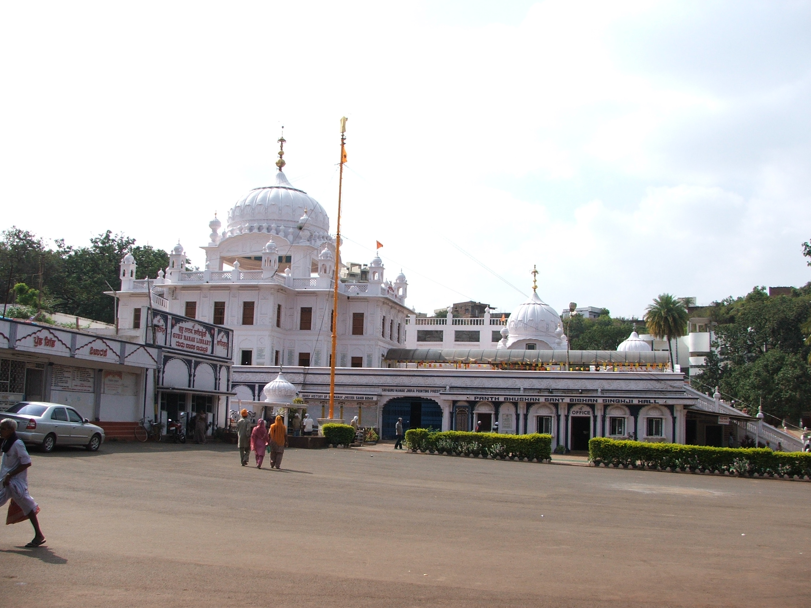
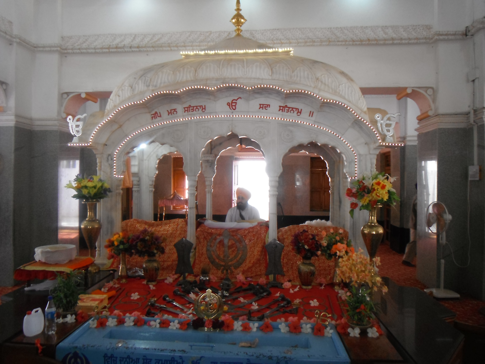

About Guru Nanak Jhira Sahib
Guru Nanak Jhira Sahib is a famous Sikh historical shrine located in Bidar, Karnataka. The Gurudwara is dedicated to Guru Nanak, the first Sikh Guru, and is known for its peaceful surroundings and sacred spring.
The shrine is situated in a valley surrounded by laterite hills. It includes the Darbar Sahib, Diwan Hall and Langar Hall, making it an important spiritual destination for pilgrims and visitors.
History
According to Sikh tradition, Guru Nanak visited Bidar during his travels in South India. He met local people and spiritual leaders and shared his teachings.
A sacred spring is associated with his visit. According to tradition, Guru Nanak removed a stone and a stream of fresh water appeared. The place later became known as Nanak Jhira, meaning a stream associated with Nanak.
The present Gurudwara was established in 1948 and has since become an important pilgrimage centre in Bidar.
Highlights
Guru Nanak Jhira Sahib Gallery
Explore the beauty and spiritual atmosphere of the shrine.





📍 Location
Guru Nanak Jhira Sahib, Shiva Nagar, Bidar, Karnataka, India
🗺️ View on Google Maps